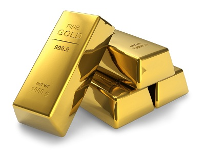

La guerra de Colombia ha sido un tema tratado por mucha gente y muchos países, esta guerra duró más de medio siglo, las FARC utiliza el narcotráfico de cocaína y de demás estupefacientes para el sostenimiento de su “ejército” también, en las últimas décadas han empezado a sostenerse a través de la extracción del oro en minas ilegales, en la cuales deforestan el bosque y matan a los seres vivos de esas zona por el mercurio y otros elementos que se utilizan opera la extracción de este metal preciosos tan codiciado por mucha gente , el cual hoy en día está entre los 108.000 pesos a los 117.000 dependiendo de qué tan fino sea, y un lingote pesa entre 12 a 13 kg , por eso nos damos cuenta que la extracción de este metal es muy fructífera hablando económicamente, pero ambientalmente es un desastre porque por los químicos la zona queda estéril, las FARC siempre ha fue ,es y será la piedrita en la bota del gobierno Colombiano porque esta organización dejó un gran huella en nuestra sociedad, además por más que las autoridades Colombianas cierren minas ilegales e incauten un gran cantidad de máquinas y químicos pareciera que no pasa nada , siguen apareciendo más y más minas ilegales.
Una de estas minas ilegales está controlada por la empresa canadiense “Gran Colombia Gold”. Esta se ubica en el pueblo de Marmatos. En este pueblo las montañas han ido cayendo poco a poco, estas minas se encuentran justamente debajo del pueblo de marmatos, son túneles demasiado largos, de hecho esta mina es la más grande en Colombia. La empresa “Gran Colombia Gold” le ha propuesto a los habitantes irse de su pueblo a cambio de plata, pero los ciudadanos dicen que no ya que ahí fue donde crecieron, tienen a su familia. Esta empresa también tiene otra pequeña sede en Segovia. En esta parte de Colombia ha habido un problema con los grupos guerrilleros. Un ejemplo claro es el de un señor que trabajaba en la mina de “Gran Colombia Gold” y se salió de esta y un día le hicieron un atentado al cual sobrevivió, pero todo fue por decir no a vender parte de su pueblo, o tenemos el caso de otro ciudadano el cual permanentemente recibió amenazas. Él dice que es de la empresa ya mencionada, solo por ser sindicalista. Poco tiempo después se fueron a la empresa a preguntarles sobre la violencia y sobre estas amenazas y el atentado, y respondieron lo que ya muchos esperaban, que ellos no estaban de acuerdo con la violencia, que esto no era permitido, pero realmente no se sabe si simplemente lo negaron, o si es la verdad.
